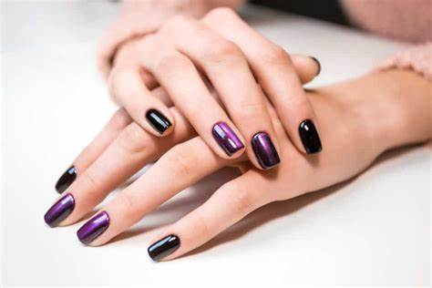

Sobre el Esmaltado Semipermanente
El esmaltado semipermanente es una técnica de manicura que ofrece un acabado duradero y brillante. Nuestro servicio garantiza uñas perfectas durante semanas.


El esmaltado semipermanente es una técnica de manicura que ofrece un acabado duradero y brillante. Nuestro servicio garantiza uñas perfectas durante semanas.

Disfruta de uñas perfectas durante semanas con nuestro esmaltado semipermanente. Olvídate de retoques constantes y luce unas manos impecables en todo momento.